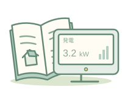

発電が少ない・動かない 準備中
発電量の低下，エラー，モニターの不調
太陽光をつけた方へ


はじめに太陽光をつけたら，これから何をする？長く使うための確認・点検と，トリセツの使い方専門業者による点検の予定と費用を確認しよう．
買取期間の終了日を確かめ，そのあとの売電先と，自宅での使い方を考えよう．
機器の状態や点検結果に合わせて，修理・交換を相談しよう．
年数は目安です．
発電量の低下，エラー，モニターの不調
汚れが気になる，点検の頼み先・費用
雨漏り，塗装・葺き替え，パネルの取り外し
家の売買，相続，契約・認定の手続き
保証・保険，施工会社と連絡がつかない，勧誘
設備の点検・交換・撤去などの相談先を探そう．
比較は太陽光＋蓄電池を新設する場合のサービス内容です．更新・修理・撤去への対応や支援の条件は，各社に確認してください．
| 手伝ってもらえること |  ソーラーパートナーズ ソーラーパートナーズ |  タイナビ タイナビ | グリエネ |
|---|---|---|---|
| 加盟する会社の審査 | ○加盟時に審査 | ○加盟時に審査 | ○保険・財務などを審査 |
| 加盟後の継続審査 | ○継続して審査 | — | — |
| 最初の連絡 | ○サイトの窓口が希望を確認 | ○サイトの窓口から確認連絡 | ○サイトの窓口が聞き取り |
| 見積もりの相談 | ○比較の相談 | ○相談受付 | ○相談受付 |
| 日程の調整 | ○調整の支援 | — | — |
| お断りの代行 | ○断りの連絡を代行 | — | — |
| 営業への苦情対応 | ○警告・紹介停止など | ○警告・登録解除 | — |
| 契約トラブルへの関与 | —原則は当事者間で解決 | ×契約交渉への介入も対象外 | —原則は利用者側で解決 |
| 工事が完成しない場合の保証 | △別途申込が必要・補償額に上限 | — | — |
広告：ソーラーパートナーズ・タイナビと提携しています．
はれトクのおすすめ
自社施工の会社に絞って探したい方や，比較・断りまで支援してほしい方におすすめします．
広告・アフィリエイト ／ ソーラーパートナーズ
無料見積もり ↗（ソーラーパートナーズ）加盟会社の審査や相談支援を確かめて，タイナビで相談したい方へ．
広告・アフィリエイト ／ タイナビ
無料見積もり ↗（タイナビ）運営による聞き取りを経て，対応する会社の紹介を受けたい方へ．
通常リンク ／ 広告リンクではありません
公式サイトへ ↗（グリエネ）